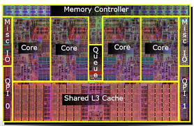

Содержание
2-е и 3-е поколения Core:Sandy Bridge
4-е и 5-е поколения Core:Haswell
С 6-го по 10-е поколения Core:Skylake
11-е поколение Core:Sunny Cove
12-е и 13-е поколения Core:Golden Cove и Gracemont
Несмотря на все достоинства Core 2, у платформы Socket 775 был явный недостаток в виде обмена данными с памятью через северный мост. Даже если забыть о проблеме увеличивающихся задержек, узким местом становилась шина FSB, пропускная способность которой была намного ниже пропускной способности ОЗУ. При таком «бутылочном горлышке» разрабатывать более быстрые процессоры для платформы было бессмысленно.
Для устранения этой проблемы Intel адаптировала серверные наработки и выпустила свою первую высокопроизводительную HEDT-платформу — LGA1366. Процессоры получили новую архитектуру Nehalem, представляющую собой дальнейшее развитие Core. Ее главными новшествами стали контроллер памяти, интегрированный в кристалл ЦП, и возвращение технологии Hyper-Threading. Не менее важной новинкой можно считать и технологию TurboBoost, которая может динамически повышать частоту на некоторую величину, в зависимости от числа активных ядер — чем их меньше, тем выше может быть частота. В процессоры добавили кеш третьего уровня L3 объемом 8 МБ, а вот кеш L2 сократили до 256 КБ на ядро. Ко всему прочему, чипы новой архитектуры получили поддержку обновленного набора инструкций SSE4.2.

Первые процессоры с привычным и сегодня названием Core i7 под сокет LGA1366 были выпущены в 2008 году. Четыре ядра, в отличие от «склеек» Core 2 Quad, были размещены на одном 45-нм кристалле, что положительно повлияло на производительность и межъядерные задержки. Оперативная память DDR3 стала трехканальной и «общалась» с процессором напрямую, не используя чипсет. Для соединения с последним стала использоваться новая шина QuickPath Interconnect, обладающая пропускной способностью до 25.6 ГБ/c — в два раза больше, чем в самом быстром режиме у FSB. TDP моделей равнялся 130 Вт, а пиковая частота в бусте могла достигать 3.73 ГГц. Официально платформа может использовать до 24 ГБ ОЗУ, но при установке появившихся через несколько лет 8 ГБ модулей максимальный объем памяти может достигать 48 ГБ.
В 2009 году Intel выпускает массовую платформу для процессоров архитектуры Nehalem — LGA1156. Функции северного моста перекочевали под крышку процессора, что сделало ненужным внешнее соединение QPI. Отсутствие последнего позволило снизить TDP до 95 Вт. С южным мостом ЦП соединялись по новой шине DMI с пропускной способностью 1 ГБ/c в каждом направлении. Количество каналов памяти DDR3 сократилось до двух, предельный объем ОЗУ — до 16 ГБ. Серия процессоров расширилась моделями с различной производительностью и позиционированием. Помимо Core i7, появились и старшие Core i5 с четырьмя ядрами, но без технологии многопоточности.
В 2010 году Intel переносит архитектуру на технологию производства 32 нм. Обновленный вариант получает название Westmere. Новый шестиядерный чип находит приют в HEDT-платформе LGA1366, а двухъядерный предназначен для массовой LGA1156. На базе последнего были представлены младшие процессоры серии Core i5 и Core i3. Модели обладают двумя ядрами с поддержкой HyperThreading. Отличие i3 от i5 в том, что первые не поддерживают TurboBoost. Максимальный TDP составил 73 Вт.

Эти процессоры впервые получили встроенную графику — до этого она находилась в северном мосту на материнской плате. Графика реализовывалась на отдельном кристалле, расположенном под крышкой ЦП. Помимо производительных серий, двухъядерные чипы легли в основу младших моделей без поддержки Hyper-Threading: десктопных и мобильных Pentium и Celeron.
3 января 2011 года Intel представляет процессоры Core второго поколения на новой архитектуре Sandy Bridge. Несмотря на схожие с предшественниками названия, новинки и сама платформа LGA1155 значительно отличаются от них. Многие особенности, заложенные в этом поколении, используются в современных процессорах Core до сих пор.
Архитектура значительно переработана по сравнению с предшественником. Одним из главных новшеств стала быстрая кольцевая шина, соединяющая процессорные ядра, кеш L3 и встроенную графику, которая теперь находится в составе основного кристалла. Шина имеет ширину в 256 бит, скорость обмена данных по ней достигает 96 Гбит/c, что вчетверо быстрее соединений прошлого поколения. При такой топологии кеш используется как процессорными ядрами, так и графическим ядром. Благодаря новой шине стало возможным создавать процессоры с количеством ядер до 20, не опасаясь узкого места в виде скорости обмена между ними.
Процессоры Sandy Bridge получили поддержку новых 256-битных мультимедийных инструкций AVX. Их задействование в соответствующем ПО при должной оптимизации способно значительно ускорить темп работы по сравнению с использованием 128-битных SSE. Были увеличены размеры буферов работы с инструкциями, был добавлен кеш L0 объемом в 1536 микроопераций. Шесть портов исполнения и усовершенствованный предсказатель переходов помогали более эффективно задействовать имеющиеся ресурсы. Платформа LGA1155 позволяет задействовать до 32 ГБ ОЗУ.

Технология TurboBoost улучшена до версии 2.0, позволяющей более эффективно повышать частоту с учетом потребляемой мощности. Контроллер памяти официально поддерживал все ту же DDR3-1333, но стал эффективнее и брал более высокие частоты в разгоне. Несмотря на прежний техпроцесс 32 нм, архитектурные улучшения и повышенные частоты давали прирост производительности от 10 до 20 % уже на старте.
Шина DMI обновилась до версии 2.0, которая удваивала пропускную способность между процессором и чипсетом. К сожалению, не обошлось и без ложки дегтя: отныне Intel заблокировала разгон всех процессоров, кроме специальных K-версий с разблокированным множителем, да и без топового чипсета для разгона стало не обойтись. Впрочем, такие версии разгонялись знатно — с предельных штатных 3.8 до 5 ГГц и выше.
Линейка новых процессоров включала в себя уже привычные названия: i7, i5, i3, Pentium и Celeron. От предыдущего поколения она отличалась тем, что десктопные процессоры i5 перестали делиться на двух- и четырехъядерные: теперь двумя ядрами обладали только мобильные представители линейки. Также процессорам немного урезали кеш L3: с 8 до 6 МБ для Core i5, и с 4 до 3 МБ у Core i3. Младших моделей Pentium и Celeron стало гораздо больше в ассортименте. Важную роль в этом моменте сыграла встроенная графика: теперь она была у всех представителей семейства, а не только у младших, как в прошлой линейке. Забегая вперед, можно отметить, что линейка процессоров с такими характеристиками, не считая мелких изменений, сохранится у Intel до седьмого поколения Core включительно.
В 2012 году Intel переносит архитектуру на техпроцесс 22 нм, снизив TDP топовых процессоров с 95 до 77 Вт. Обновленная версия получает название Ivy Bridge. Главным новшеством третьего поколения процессоров становится поддержка третьего поколения шины PCI-E против второго у предшественника, а также новая встроенная графика и более быстрая память DDR3-1600. Хотя микроархитектура подверглась некоторой оптимизации, производительность на такт практически не возросла. Модельный ряд остался неизменным.
В том же году компания выпускает свою вторую HEDT-платформу для энтузиастов — LGA2011. Под нее также были выпущены как 32 нм процессоры Sandy Bridge, так и 22 нм Ivy Bridge годом позже. Оба семейства имеют процессоры с четырьмя и шестью ядрами c поддержкой многопоточности, но без интегрированной графики. Эти ЦП обладают встроенным четырехканальным контроллером памяти DDR3-1600 и поддерживают PCI-E 3.0 — в отличие от массовой платформы с 16 линиями, здесь их количество может достигать 40. Различные модели имеют TDP от 130 до 150 Вт, максимум ОЗУ составил 64 ГБ.
В 2013 году Intel представляет миру новую архитектуру процессоров Core четвертого поколения — Haswell. Специально для нее разрабатывается платформа LGA1150. В этом поколении компания поставила одной из главных целей создать более экономичные процессоры для ноутбуков, поэтому уделила много внимания энергосбережению. По этой причине с материнской платы под крышку процессора был перенесен преобразователь напряжения.
Главным нововведением стала поддержка новых 256-битных мультимедийных инструкций AVX2, а также FMA — инструкций умножения-сложения. Количество исполнительных портов было увеличено с шести до восьми, что позволяло более эффективно задействовать новые инструкции параллельно с обычными вычислениями. Это изменение также положительно повлияло на технологию Hyper-Threading, повысив эффективность её работы.
У процессоров четвертого поколения были увеличены размеры всех буферов для работы с инструкциями, за счет чего возросла точность предсказания. В два раза возросла скорость кешей первого и второго уровней, а кеш третьего уровня получил независимую от процессорных ядер частоту. Все процессоры серии получили обновленные видеоядра, а топовые мобильные модели с производительной графикой еще одну новинку — кристалл eDRAM объемом 128 МБ, работающий в качестве кеша четвертого уровня как для ЦП, так и для ГП.
При этом тактовые частоты остались практически неизменными и не превышали потолок 4 ГГц даже в бусте, за исключением единственной обновленной модели K-серии, выпущенной немного позже — у нее одно ядро разгонялось до 4.4 ГГц. Максимальный TDP составил 88 Вт. Изначальный рост производительности был около 5 %, но с развитием программного обеспечения, нуждающегося в быстрых кешах и использующего новые инструкции параллельно с обычными вычислениями, разница между двумя поколениями стала доходить до 15-20 %.
Следующим шагом «тик» стали процессоры пятого поколения под кодовым названием Broadwell, выпущенные в начале 2015 года и перенесенные на технологию производства 14 нм. Благодаря ей архитектура стала еще более энергоэффективной. Вдобавок к этому, были немного увеличены объемы буферов для работы с инструкциями и слегка доработан блок операций с плавающей запятой. Главным изменением стала более производительная встроенная графика.
Как и у предшественника, топовые модели оснащались кристаллом eDRAM, две из них этот появились и в десктопных процессорах. Несмотря на практически идентичную архитектуру, большой кеш L4 позволил новинкам заметно обгонять предшественников в играх и других чувствительных к кешу приложениях. При этом частоты из-за дополнительного кристалла под крышкой пришлось снизить — максимальный буст составлял всего 3.7 ГГц, но и TDP при этом был снижен до 65 Вт.
Помимо пары топовых, других моделей под платформу LGA1150 выпущено не было. Вместо этого чипы Broadwell получили широкое распространение в мобильном сегменте, хотя откровенно бюджетных ЦП в их ассортименте нет: Pentium и Celeron они обошли стороной. К привычным i3, i5 и i7 были добавлены процессоры серии Core M, являющиеся решениями с ультранизким энергопотреблением для легких ноутбуков и планшетов.
В 2014-2016 годах процессоры четвертого и пятого поколений с количеством ядер более четырех нашли приют в новой HEDT-платформе LGA2011-v3. Несмотря на одинаковое количество ножек, сокет несовместим с предыдущим и реализует поддержку новой четырехканальной памяти DDR4 вместо DDR3 у предшественника. Встроенной графики, как и прежде, нет. На этой платформе процессоры архитектуры Haswell получают от шести до восьми ядер, а архитектуры Broadwell — до 10. Количество линий PCI-E 3.0 не изменилось. Максимум ОЗУ расширился до 128 ГБ, а TDP моделей составил 140 Вт.
В сентябре 2015 года Intel представляет процессоры следующей процессорной архитектуры Skylake вместе с новой платформой LGA1151. В этот раз компания решила попробовать усидеть на двух стульях, называя новую архитектуру самой эффективно масштабируемой за всю историю Core — то есть подходящей как для ультраэкономичных мобильных, так и для производительных десктопных и серверных решений.
Несмотря на то, что поддержка новых 512-битных инструкций AVX-512 появилась только в серверных и HEDT-процессорах этой линейки, повысить производительность частично помогли именно сопутствующие ей внутренние изменения. Как и в случае с Haswell, для быстрой работы инструкций увеличили размеры всех буферов, и ускорили кеши — в этот раз L2 и L3. В результате скорость работы AVX2 и FMA увеличилась на 20-30 %. Хотя преобразователь напряжения в этом поколении вновь вернулся на материнскую плату, а частоты буста не превышали 4.2 ГГц, тепловыделение процессоров несколько повысилось и достигло 91 Вт.
Контроллер ОЗУ в процессорах шестого поколения поддерживает возможность работы с одним из двух видов памяти — как DD3L-1600, так и более быстрой DDR4-2133 с максимальным объемом до 64 ГБ. Архитектурные изменения вкупе с более быстрой памятью сделали процессоры нового поколения на 5-10 % быстрее предшественников. Важной особенностью стал переход на шину DMI 3.0 между процессором и чипсетом. В его результате его пропускная способность канала выросла с 2 до 3.9 ГБ/c, что открывало доступ к более быстрым накопителям и большему количеству периферийных устройств. Кристалл eDRAM в этом поколении получил две разновидности — 64 и 128 МБ, но стал привилегией исключительно топовых мобильных решений. Встроенные видеоядра нового поколения получили небольшой рост производительности и поддержку новых функций.
В 2016 году Intel обновила свое представление стратегии «тик-так». Шаг «тик» все также означает уменьшение техпроцесса существующей архитектуры. А вот шагов «так» теперь стало два: первый означает переход на новую архитектуру, второй — ее оптимизацию. Дебютным вторым «таком» в начале 2017 года стали процессоры седьмого поколения Core под кодовым названием Kaby Lake.
Новые процессоры не получили никаких, даже минорных, изменений внутри архитектуры. Все новшество заключалось в оптимизированном техпроцессе 14 нм второго поколения, который позволил на пару сотен МГц увеличить тактовые частоты, и поддержке чуть более быстрой памяти DDR4-2400. Единственным изменением в ассортименте стали новые процессоры Pentium. Обладая, как и ранее, двумя ядрами, они стали обрабатывать четыре потока благодаря технологии Hyper-Threading.
По идее, следующим шагом компании должен был стать «тик» с переносом старой архитектуры на новый техпроцесс. Изначально им должны были стать процессоры Cannon Lake на первом поколении 10 нм технологии. Однако производственные проблемы вынудили Intel вновь использовать старые добрые 14 нм, теперь уже третьего поколения. Восьмое поколение процессоров под названием Coffee Lake было представлено в сентябре 2017 года — всего спустя несколько месяцев после седьмого.
Как и следовало ожидать, архитектура Coffee Lake изменений не претерпела. Но в этот раз из-за обостряющейся конкуренции компания наконец решила увеличить предельное количество ядер массовой платформы с четырех до шести, что привело к изменению конфигурации основных линеек процессоров. i7 получили шесть ядер с поддержкой Hyper-Threading и 12 Мб L3 кеша, i5 — шесть ядер с 9 МБ кеша, и i3— четыре ядра с 6 МБ кеша. Конфигурация Pentium и Celeron осталась неизменной с прошлого поколения.
Новая платформа LGA1151 v2, используемая процессорами, не отличается от первой версии физически. Работа новых процессоров на «старушке» была заблокирована искусственно. По официальным заявлениям, старые платы были не способны обеспечивать нужную мощность питания новых шестиядерных процессоров. При этом энтузиасты нашли способ обойти это ограничение и использовать новые ЦП с платами первой версии сокета LGA1151.
Шестиядерные процессоры стали поддерживать более быструю память DDR4-2666, четырехъядерные и двухъядерные решения ограничили планкой прошлого поколения DDR4-2400. В процессорах Coffee Lake впервые применили PL1 и PL2 — лимиты потребления для долговременной и кратковременной нагрузки. Именно поэтому при TDP в 95 Вт флагманы серии способны были потреблять почти 120 Вт под кратковременной нагрузкой. Пиковая частота возросла до 4.7 ГГц, а у топового процессора юбилейной серии 8086K, названного в честь оригинального Intel 8086, достигла 5 ГГц при активности одного ядра.
Процессоры девятого поколения Core были выпущены в конце 2018 года и получили кодовое имя Coffee Lake Refresh. Что неудивительно, ведь «подросли» они лишь количественно. Топовые решения сменили названия на Core i9, обзавелись восемью ядрами с технологией мнопоточности и 16 МБ L3-кеша, при этом потребляя до 180 Вт. В семейство Core i7 теперь входили восьмиядерные модели без Hyper-Threading c кешем объемом 12 МБ. Технологию Turbo Boost впервые разрешили использовать семейству Core i3, за счет чего разгоняющихся свыше 4 ГГц моделей в новой линейке стало гораздо больше. Благодаря обновленным материнским платам стало возможным использовать до 128 ГБ ОЗУ.
История архитектуры Skylake заканчивается на процессорах десятого поколения Core под кодовым названием Comet Lake, выпущенных в 2020 году. Использующие все тот же 14 нм техпроцесс третьего поколения, они получили увеличенное до 10 количество ядер и пиковые частоты вплоть до 5.3 ГГц. Все это сопровождалось сменой платформы на новую с сокетом LGA1200. Возросло и максимальное энергопотребление новинок — теперь оно могло доходить до 250 Вт.
Помимо флагманского Core i9 с 10 ядрами и 20 потоками, новая линейка отметилась новыми конфигурациями для процессоров, исключая младшие Pentium и Celeron. Все оставшиеся процессоры стали поддерживать технологию HyperThreading, что в два раза увеличило количество обрабатываемых потоков. Двум флагманским линейкам добавили поддержку технологии TurboBoost Max 3.0, которая еще агрессивнее повышает частоту одного активного ядра, и разрешили использовать память DDR4-2933. Для остальных процессоров пределом, как и прежде, является DDR4-2666.
Параллельно массовой платформе процессоры архитектуры Skylake появились на HEDT-платформе нового поколения LGA2066, выпущенной в 2017 году. Как и у прошлой платформы, используется четырехканальная память DDR4, но с повышенными частотами — от 2400 МГц у младших до 2933 МГц у старших моделей. Несмотря на одинаковую архитектуру, эти процессоры отличаются от массовых поддержкой инструкций AVX-512 и новой ячеистой схемой межъядерных соединений, пришедшей на смену кольцевой шине. Для процессоров с большим количеством ядер она подходит больше, но негативно отражается на производительности некоторых приложений реального времени, в частности игр.
Всего под LGA2066 были выпущены три поколения процессоров на тепроцессе 14 нм третьего поколения. Линейка довольно обширна и простирается от базовых четырехъядерных моделей до монструозных процессоров с 18 ядрами и 36 потоками. В зависимости от позиционирования, у моделей разнится и количество линий PCI-E 3.0 – от 16 до 48. Максимальный TDP моделей составляет 165 Вт. Но в реальности процессоры серии могут потреблять больше, как и прочие многоядерные Skylake.
LGA2066 на данный момент является последней высокопроизводительной платформой Intel. Вследствие дальнейшего развития новых архитектур и увеличения количества ядер на массовых платформах, разрабатывать новую HEDT для компании сейчас не в приоритете.
Несмотря на то, что Skylake оставалась основной архитектурой Intel на протяжении более чем пяти лет, компания не раз пыталась доработать ее за это время. В десктопные процессоры улучшенные версии не попали, но тестовый полигон у компании все же был — им стали ноутбучные процессоры.
В 2018 году планировался перевод архитектуры Skylake на 10 нм техпроцесс. Такими решениями должны были стать процессоры семейства Cannon Lake. Но производственные проблемы и высокий уровень брака нового техпроцесса не позволили выпускать эти чипы массово, и в итоге свет увидел всего один двухъядерный мобильный чип с нерабочей встроенной графикой.
В конце 2018 года Intel представляет следующую за Skylake процессорную архитектуру: Sunny Cove. Впервые за много лет количество исполняемых за такт инструкций возросло с четырех до пяти, благодаря чему производительность должна была возрасти на 15-20 %. Количество исполнительных портов было увеличено до 10 штук. В полтора раза увеличены кеш микроопераций L0 и кеш L1, вдобавок ставший быстрее. В очередной раз были увеличены буферы для работы с инструкциями. Набор инструкций AVX-512 был расширен, и теперь его должны были получить все чипы, в том числе для массовых и мобильных платформ.
Первенцами новой архитектуры стали мобильные чипы Ice Lake, выпущенные в конце 2019 года. Десятинанометровая технология производства была усовершенствована, но все еще не позволяла производить высокочастотные процессоры с большим количеством ядер — максимальным стал четырехъядерный кристалл с пиковыми частотами в районе 4 ГГц. В результате, десктопные процессоры 10-го поколения остались на старой архитектуре, а вот мобильные перешли на новую. Помимо архитектурных улучшений, процессоры получили поддержку более быстрой памяти DDR4-3200 и LPDDR4-3733. Пригодилась такая память и для новой встроенной графики, частично она должна была компенсировать отсутствие кеша eDRAM — с этого поколения от него было решено полностью отказаться.
В сентябре 2020 года выходят новые мобильные чипы Tiger Lake, относящиеся к 11-му поколению Core. Архитектура была перенесена на второе поколение 10 нм техпроцесса под названием SuperFin и получила название Willow Cove. Усовершенствованный техпроцесс уменьшил процент брака и позволил создать более сложные восьмиядерные чипы с увеличенными частотами. Изменилась конфигурация кеш-памяти второго уровня для каждого ядра: инклюзивный кеш в 0.5 МБ сменил увеличенный неинклюзивный кеш объемом 1.25 МБ.
Одним из главных нововведений является поддержка шины PCI-E 4.0. Помимо 16 линий для видеокарты, впервые добавляются еще 4 линии для NVMe-накопителя. Поддержка LPDDR4 расширяется до памяти с частотой 4266 МГц. Не менее важным новшеством является встроенная графика нового поколения Intel Xe с собственным кешем объемом 3.8 МБ.
Несмотря на все достоинства, 10 нм чипы компании так и не смогли показать стабильности на высоких частотах. Поэтому для десктопов архитектура была перенесена на 14 нм нормы, в результате чего на свет появились процессоры 11-го поколения для LGA1200 — Rocket Lake, выпущенные в марте 2021 года. Сочетающие все преимущества мобильных предшественников, они смогли предложить более высокие пиковые частоты до 5.3 ГГц. К тому же, несмотря на использование все той же шины DMI 3.0 для связи с чипсетом, ее ширина увеличилась вдвое — с четырех полос до восьми.
В этом поколении не оказалось чипов семейств Core i3, Pentium и Celeron — младшими вариантами являются Core i5. Конфигурации ядер остальных моделей не претерпели изменений, за исключением старших Core i9, которые потеряли два ядра и стали восьмиядерными. Упразднилась и неактуальная для десктопных ЦП поддержка памяти LPDDR, оставив единственным вариантом ОЗУ DDR4 со скоростью до 3200 МГц.
11-е поколение Core принесло немало новшеств. Но революционные изменения в строении центральных процессоров Intel начались именно со следующего, 12-го поколения Core, и процессоров Alder Lake на новой платформе LGA1700. С их приходом процессоры с архитектурой x86 впервые получили два типа ядер — производительные и энергоэффективные. Ядра отличаются не только частотой, но и архитектурой. Производительные построены на архитектуре Golden Cove — наследнике Sunny Cove со множеством улучшений. Энергоэффективные — на Gracemont, являющейся усовершенствованным продолжателем дела «атомной» архитектуры Tremont.
Похожий подход достаточно давно используют ARM-процессоры в мобильных устройствах. Производительные ядра предназначаются в первую очередь для высокоприоритетных задач, энергосберегающие — для фоновых процессов. Также можно объединить усилия двух блоков ядер для решения одной задачи, требующей максимальное количество процессорных ресурсов. Управляет назначением задач планировщик под названием Thread Director. Процессоры лишились инструкции AVX-512, так как энергоэффективные ядра их не поддерживают.
Ядра Golden Cove получили достаточно много изменений. Декодеров микроопераций стало шесть, возросли размеры буферов для работы с инструкциями и объемы кешей, количество исполнительных портов увеличено с 10 до 12. Благодаря изменениям новые ядра стали способны выполнять до шести инструкций за такт. Произведенные улучшения поспособствовали росту однопоточной производительности, который составил около 20 %.
Но это не все, ведь в составе новых процессоров есть еще и энергоэффективные ядра. Технология HyperThreading у них не поддерживается, за счет чего топовые решения Alder Lake с 8 производительными и 8 энергоэффективными ядрами могут обрабатывать не 32, а лишь 24 потока одновременно. Пиковая частота производительных ядер составила 5.2 ГГц, энергоэффективных — 4 ГГц.
Впрочем, и такой конфигурации было достаточно, чтобы опередить прошлое поколение процессоров в многопоточных вычислениях до двух раз. Привычные линейки процессоров получили новые конфигурации с учетом двух типов ядер. У Core i9 стало по восемь ядер каждого типа, у Core i7 на четыре энергоэффективных ядра меньше. Core i5 серии K получили шесть быстрых ядер и четверку медленных. А вот обычные i5 и более младшие процессоры в этом плане изменений не получили — энергоэффективные ядра у них отсутствуют. Производятся процессоры по технологии Intel 7, которая является третьим поколением 10 нм техпроцесса компании. Несмотря на это, топовые модели могут потреблять до 241 Вт.
Помимо заметного повышения производительности, значительно расширились периферийные возможности процессоров. 16 линий PCI-E для слота видеокарты стали относиться к поколению 5.0, а шина DMI для связи с чипсетом обновилась до версии 4.0, тем самым удвоив пропускную способность. Процессоры нового поколения поддерживают два поколения памяти: DDR4-3200 и DDR5-4800, объем которой может доходить до 192 ГБ. Мобильные версии дополнительно поддерживают энергоэффективную память LPDDR5-5200 и LPDDR4-4266, количество производительных ядер у них ограничено шестью.
В конце 2022 года Intel представила обновленные процессоры Сore 13-го поколения под кодовым названием Raptor Lake, использующие все ту же платформу LGA1700. Несмотря на новое название, ядра не претерпели архитектурных изменений, прежним остался и техпроцесс. Изменения в этом поколении не качественные, а количественные: процессоры новой линейки получили больше энергоэффективых ядер. У топовых моделей Core i9 их теперь 16, у i7 и старших i5 — восемь, и даже у самых младших i5, ранее не обладавших ими, появилось четыре таких ядра.
Из прочих новшеств можно отметить поддержку более быстрой DDR5-5200 и увеличение тактовых частот обоих видов ядер: производительных — до 6 ГГц, энергоэффективных — до 4.3 ГГц в пике. Тепловыделение флагманских моделей в этот раз достигло 253 Вт. На данный момент 13-е поколение Core является последним и самым актуальным из всех процессоров Intel.